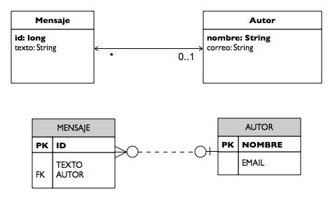

Ejercicios sesión 5: Entity Manager
En esta sesión de ejercicios vamos a aprender algo más de los EntityManager y de sus contextos de persistencia. Vamos también a trabajar con las transacciones.
Usaremos de nuevo el ejercicio terminado en la sesión 1, para no tener las entidades y relaciones que hemos introducido en las últimas dos sesiones. De esta forma probaremos los ejercicios con una aplicación sencilla.
Contexto de persistencia
En este ejercicio vamos a probar la diferencia entre el contexto de persistencia y la base de datos y a reforzar la característica principal del contexto de persistencia: es una caché de la base de datos. Lo vamos a hacer estudiando la relación uno-a-muchos entre autor y mensajes. Recordemos que la relación es propiedad de la entidad Mensaje y que allí es donde se guarda la clave ajena a la entidad Autor (ver figura).

Debido a que la entidad propietaria es el Mensaje si no actualizamos esa clave ajena (con el método setAutor()) no se guardará la relación en la base de datos. También debemos recordar que en la entidad Autor se guarda una colección de mensajes. Esta colección reside en el contexto de persistencia. El responsable de recuperar la colección de mensajes de la base de datos es el EntityManager, que intercepta la llamada al método getMensajes() y realiza una consulta SQL si lo considera necesario.
1. Copia el proyecto jpa-sesion1-web con el nombre jpa-sesion5-web. Vamos a trabajar en este nuevo proyecto. Vamos a trabajar con el método doAdd del servlet doAction. Si recuerdas, era algo parecido a esto (hemos introducido alguna modificación, actualiza tu código para que sea igual que este):
EntityManager em = emf.createEntityManager();
em.getTransaction().begin();
Autor autor = em.find(Autor.class, autorStr);
if (autor == null) {
autor = new Autor(autorStr, autorStr + "@ua.es");
em.persist(autor);
}
Mensaje mensaje = new Mensaje(mensStr);
em.persist(mensaje);
// actualizamos la relación entre autor y mensaje
mensaje.setAutor(autor);
autor.getMensajes().add(mensaje);
Collection<Mensaje> mensajes = autor.getMensajes();
em.getTransaction().commit();
request.setAttribute("autor", autor);
request.setAttribute("mensajes", mensajes);
getServletContext().getRequestDispatcher("/listaMensajes.jsp")
.forward(request, response);
em.close();
emf.close();
Hemos marcado en negrita la pareja de instrucciones que actualizan la relación entre el mensaje y el autor. Modifica ahora el código y comenta la instrucción:
mensaje.setAutor(autor);
De esta forma se llama únicamente al método que actualiza la colección de mensajes en el autor.
3. Prueba ahora a ejecutar el servlet, añadiendo un nuevo mensaje a un autor. ¿Se lista el nuevo mensaje en el autor? ¿Se guarda en la base de datos la relación? ¿Qué está pasando? (contesta en respuestas.txt).
4. Vuelve a cambiar la forma de actualizar la relación para que ahora se añada únicamente el Autor al Mensaje. Quita la actualización de la colección de mensajes del autor. En teoría, cuando llamemos al método getMensajes() del Autor, el EntityManager deberá generar la consulta SQL necesaria para actualizar la colección de mensajes. ¿Lo hace bien?
5. Prueba a escribir el siguiente código en el servlet:
EntityManager em = emf.createEntityManager();
em.getTransaction().begin();
Autor autor = em.find(Autor.class, autorStr);
if (autor == null) {
autor = new Autor(autorStr, autorStr + "@ua.es");
em.persist(autor);
}
Mensaje mensaje = new Mensaje(mensStr);
em.persist(mensaje);
int mens = autor.getMensajes().size();
System.out.println(mens);
// actualizamos la relación entre autor y mensaje
mensaje.setAutor(autor);
//autor.getMensajes().add(mensaje);
Collection<Mensaje> mensajes = autor.getMensajes();
em.getTransaction().commit();
request.setAttribute("autor", autor);
request.setAttribute("mensajes", mensajes);
getServletContext().getRequestDispatcher("/listaMensajes.jsp")
.forward(request, response);
em.close();
emf.close();
Prueba la función introduciendo un mensaje y un autor nuevo. ¿Se muestra correctamente la lista de mensajes? ¿Se ha hecho realmente la modificación en la base de datos? ¿Qué está pasando?
6. Por último, añade la siguiente instrucción justo antes de obtener la colección de mensajes antes de cerrar la transacción.
em.refresh(mensajes);
¿Funciona ahora correctamente el listado? ¿Por qué?
7. Déjalo todo como estaba al principio, llamando al DAO para actualizar las propiedades de ambas entidades y quitando las dos líneas que imprimen el número de mensajes de la colección.
Carga perezosa
Vamos ahora a probar algunas características de la carga perezosa (lazy loading) que realiza JPA.
1. Comencemos por repetir lo que hicimos en uno de los primeros ejercicios. Seguimos con el mismo servlet. Cambia el código para que se cierren el entity manager y la factoría antes de hacer la redirección a la página JSP. De esta forma, la entidad autor se desconectará del contexto de persistencia. ¿Qué sucede con la colección mensajes que se pasa a la página JSP? ¿Qué error aparece? ¿Qué es lo que lo causa?
2. Vamos a arreglar el error accediendo a la colección justo antes de cerrar el entity manager. De esta forma la colección se carga en memoria y no es una referencia. Escribe la siguiente sentencia justo antes de cerrar el entity manager:
Collection<Mensaje> mensajes = autor.getMensajes(); em.getTransaction().commit(); autor.getMensajes(); em.close();
¿Funciona? Prueba ahora con el siguiente código:
Collection<Mensaje> mensajes = autor.getMensajes(); em.getTransaction().commit(); autor.getMensajes().size(); em.close();
¿Funciona ahora? ¿Por qué?
3. Por último, cambia la página JSP que muestra la lista de mensajes para que el bucle que recorre la colección quede de esta forma:
<c:forEach items="${mensajes}" var="mens">
<tr>
<td><c:out value="${mens.autor.nombre}"/></td>
<td><c:out value="${mens.texto}"/></td>
</tr>
</c:forEach>
Ahora el nombre del autor se obtiene a partir del mensaje. ¿Funciona ahora la página JSP? ¿Por qué? Deja así la página JSP y modifica el servlet para que el listado vuelva a funcionar.